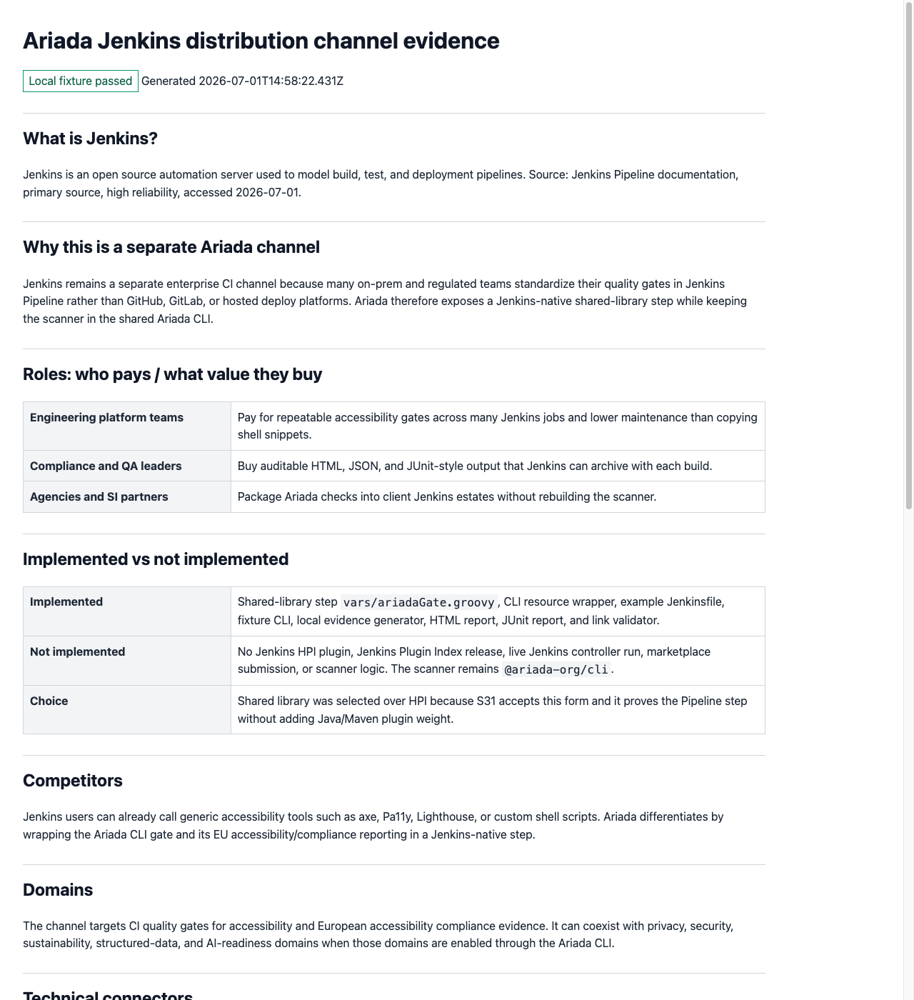

Ariada Jenkins scan evidence dashboard
Local fixture passed The Jenkins shared-library wrapper invoked the Ariada CLI fixture and produced archived HTML, JSON, JUnit-style, and screenshot evidence.
What is Jenkins?
Jenkins is an open source automation server used to model build, test, and deployment pipelines. Source: Jenkins Pipeline documentation, primary source, high reliability, accessed 2026-07-01.
Why this is a separate Ariada channel
Jenkins is a separate enterprise CI channel because regulated and on-prem teams often standardize their gates in Jenkins Pipeline instead of GitHub, GitLab, or deploy-time hosts. Ariada therefore exposes a Jenkins-native shared-library step while keeping the scanner in @ariada-org/cli.
Roles: who pays / what value they buy
| Engineering platform teams | Pay for a reusable Jenkins Pipeline gate across many jobs. |
|---|---|
| Compliance and QA leaders | Buy auditable HTML, JSON, and JUnit-style artifacts archived per build. |
| Agencies and SI partners | Package Ariada checks into client Jenkins estates without rebuilding scanner logic. |
Implemented vs not implemented
| Implemented | Jenkins shared-library step, shell resource wrapper over ariada scan, example Jenkinsfile, fixture CLI, generated HTML/JUnit/JSON evidence, embedded screenshot, and link validation. |
|---|---|
| Not implemented | No full HPI plugin, no Jenkins Plugin Index release, no live Jenkins controller run, no marketplace submission, and no scanner reinvention. |
| Decision | Shared library remains the chosen S31 form because the handoff explicitly allows it and it proves the Pipeline surface without Java/Maven plugin weight. |
Competitors
Competing Jenkins accessibility approaches include generic shell invocations of axe, Pa11y, Lighthouse, or bespoke scanner scripts. Ariada differentiates by wrapping the Ariada CLI gate and EU accessibility evidence model in a Jenkins-native step.
Domains
The S31 channel targets CI accessibility gates and European accessibility compliance evidence. Other Ariada CLI domains can be enabled through the shared CLI rather than through Jenkins-specific scanner code.
Technical connectors
| Shared library | vars/ariadaGate.groovy exposes ariadaGate(...). |
|---|---|
| CLI wrapper | resources/org/ariada/jenkins/ariada-jenkins-gate.sh calls ariada scan https://example.invalid/jenkins-fixture --output-dir /Users/pedro/adopta/.worktrees/adopta-s31-jenkins/integrations/jenkins-ariada/scan-evidence --format both. |
| Jenkins artifacts | The Pipeline step calls archiveArtifacts, junit, and publishHTML when output files exist. |
Evidence
| Target | https://example.invalid/jenkins-fixture |
|---|---|
| Output directory | /Users/pedro/adopta/.worktrees/adopta-s31-jenkins/integrations/jenkins-ariada/scan-evidence |
| JUnit report | junit.xml |
| JSON report | scan.json |
| Transcript | transcript.txt |
Screenshot
{kind=link}

Blockers
Live Jenkins validation and Jenkins Plugin Index publication remain blocked on a Jenkins controller, shared-library hosting or plugin release infrastructure, credentials, and operator governance. The local wrapper command flow itself is proven by this fixture.
Distribution
Initial distribution is a Jenkins Pipeline shared library. A future full HPI plugin can reuse the same Ariada CLI wrapper if Plugin Index discoverability becomes worth the added maintenance burden.
Monetization
The channel supports enterprise CI adoption through repeatable gates, archived compliance evidence, implementation support, and commercial support around the shared Ariada CLI.
Sources
- Jenkins Pipeline documentation - primary source, high reliability, accessed 2026-07-01.
- Jenkins Shared Libraries documentation - primary source, high reliability, accessed 2026-07-01.
- Jenkins JUnit Pipeline step reference - primary source, high reliability, accessed 2026-07-01.
- Jenkins HTML Publisher plugin page - primary source, high reliability, accessed 2026-07-01.
Findings
- target-size (minor): Fixture button is intentionally below the recommended target size.
- image-alt (minor): Fixture image is intentionally missing alternative text.